DALE CARNEGIE · HOW TO WIN FRIENDS · PART TWO · CHAPTER 2 · PDF p80–87
A Simple Way to Make a Good First Impression
Your face speaks before you do. A real smile tells people "I'm glad you're here", it can be heard down a phone line, and you can start one even on a day you don't feel like it.
This is the shortest idea in the book and one of its shortest chapters. Carnegie opens with a rich woman who spent a fortune on furs and jewels but wore a sour face, and sets her against a steel executive who said his smile was worth a million dollars. He then piles up evidence that a smile changes rooms and outcomes: a baby who turns a tense waiting room into a friendly one, a hiring manager who won a sought-after graduate with a warm phone voice, and a grumpy stockbroker whose week-long smile experiment changed his marriage and his business. He is careful to say he means a real smile, not a fixed grin. And for the days when you don't feel like smiling, he gives a method borrowed from William James: act cheerful, and the feeling tends to follow, because happiness depends more on how you think about your situation than on the situation itself.
Principle 2 of Part Two
Smile.
How the chapter fits together
pdf p80–87 · read this first
Where it sits. This is the second chapter of Part Two, "Six Ways to Make People Like You". The six principles of Part Two are: become genuinely interested in other people (Ch.4), smile (this chapter), remember names (Ch.6), be a good listener (Ch.7), talk in terms of the other person's interests (Ch.8) and make the other person feel important, sincerely (Ch.9). The chapter before argued that real interest in people is what makes them welcome you; this one is about the first visible sign of that interest, the expression on your face. Part One (Ch.1–3) was about handling people; Part Two is about being liked, and the smile is the cheapest, fastest tool in it.
The argument as a chain. Each row builds on the one before.
Problemwe dress up to impress→but people read the face first(the heiress at dinner)
Ideaa smile says "I like you, I'm glad to see you"→Schwab · dogs · babies
It spreadsthe baby in the vet's waiting room→one smile changes a whole room
Caveata fake grin fools nobody→only a real smile counts(McConnell · the store's hiring manager)
Even unseen"phone power"Cryer wins the Purdue graduate→a smile is heard in the voice
Enjoy itrubber-company chairman: fun drives success→enjoy meeting people so they enjoy meeting you
Proofone week of smiling→Steinhardt's home, office, income
Don't feel it?act as if (William James)→happiness is inside: how you think about it(Lincoln · the boys on the station stairs)
Go firstMaria Gonzalez at the water coolerHubbard's attitude advice"no smile, no shop"
Gifta smile is a messenger of goodwill→the store's Christmas ad→Principle 2: Smile
The loop is our drawing of the chapter's claim, not a figure from the book. The book has no figures.
01 · THE OPENING CONTRAST
The heiress in diamonds with a sour face, and the man whose smile was worth a million dollars
pdf p80
Carnegie opens with two people who sit at opposite ends of the same scale.
a New York dinner partysables · diamonds · pearls"a million dollars"
The heiress. At a dinner party in New York, one guest, a woman who had inherited money, badly wanted everyone to like her. She had spent a small fortune on furs, diamonds and pearls. She had done nothing about her face, which looked sour and self-centred. What she missed, Carnegie says, is something everybody already knows when they think about it: the expression on your face matters far more than the clothes on your back.
Charles Schwab. The steel executive Charles Schwab told Carnegie that his smile had been worth a million dollars, and Carnegie thinks that was an understatement. Schwab's success came almost entirely from his personality, his charm and his knack for making people like him, and his smile was one of the most attractive parts of that personality.
What a smile says. Actions speak louder than words. Without any words at all, a smile tells the other person three things: I like you, you make me happy, and I am glad to see you.
Dogs and babies. That is why dogs are so popular: they are so happy to see us that they nearly jump out of their skins, so of course we are happy to see them. A baby's smile works the same way. Neither of them is trying to impress anyone. Their pleasure at seeing you is obvious and complete, and it pulls the same feeling out of you.
"The expression one wears on one's face is far more important than the clothes."Carnegie, on the heiress (pdf p80), shortened
Beyond the book: which Schwab?
This is Charles M. Schwab (1862–1939), the steel man who became the first president of U.S. Steel and later ran Bethlehem Steel, not Charles R. Schwab, who founded the brokerage firm in the 1970s. Readers have already met him in Part One (Ch.2 The Big Secret), where Carnegie says Andrew Carnegie paid him over a million dollars a year mainly for his ability to handle people, and he returns in later chapters (Ch.21, Ch.23). So "worth a million dollars" is close to literal: his people skills were what he was paid for.
Picture it
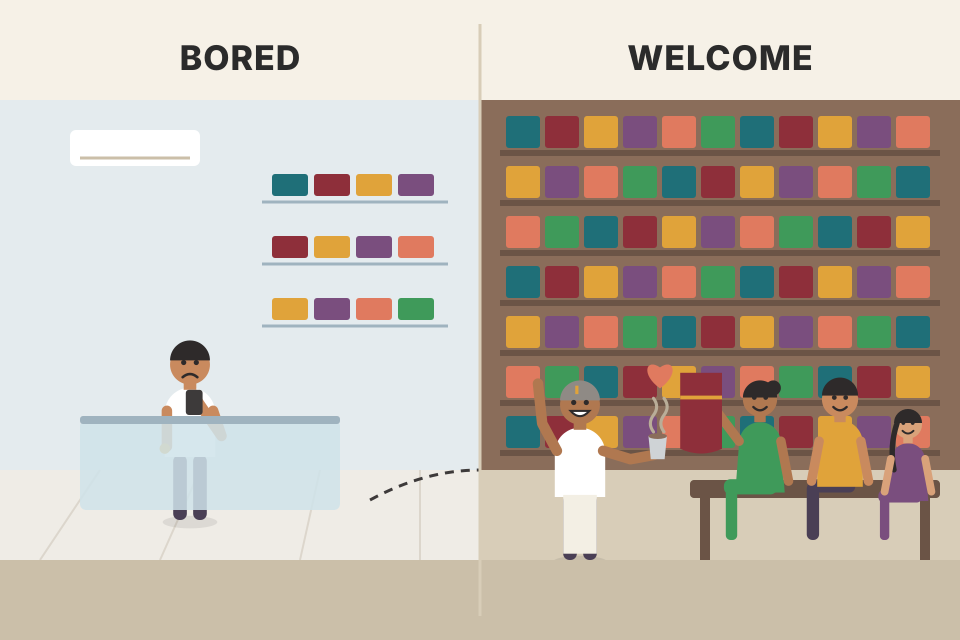
Two shopkeepers on the same street in Chennai sell the same silk sarees. One has a gleaming, air-conditioned showroom with marble floors, and an owner who looks up from his phone with a bored frown. The other has a cramped shop, and an owner who stands up, smiles, and says "Come, come, sit, have some coffee." Most families end up in the cramped shop, and come back for the next wedding.
Where it breaks: a showroom can be rebuilt with money; a face cannot be bought at all, which is exactly the heiress's mistake. And customers also care about price and quality: a smile gets you a fair hearing, it does not sell a bad saree.
What's happening behind it
The book's explanation: a smile is an action, and people trust actions more than words. When someone is plainly pleased to see you, like a dog at the door, you feel liked, and people like those who like them. Clothes and jewels say "look at me"; a smile says "I'm glad to see you". The first is about the wearer, the second is about the other person, which ties this chapter to the one before it (Ch.4: be genuinely interested in others).
Beyond the book: first-impression research (for example Janine Willis and Alexander Todorov, 2006) found that people form judgments of trustworthiness and likeability from a face in about a tenth of a second, and that more time mostly makes them more confident rather than changing the judgment. Facial expression is one of the strongest inputs to that snap judgment, which fits Carnegie's point that the face arrives before the outfit is even noticed.
At work
Engineers often treat first impressions as "soft" and put their effort into the equivalent of sables and pearls: a polished deck, a perfect architecture diagram, an impressive CV. Those matter. But in a first meeting with a new team, a client or an interviewer, people decide in the first minute whether you seem glad to be there. Walking into a design review with a tense face because you are worried about questions reads to the room as "I'd rather not be here with you".
Interview angle. In an onsite or video interview, the first thirty seconds (greeting, eye contact, a real smile, a "thanks for making time") set the frame for the next hour. It will not rescue a weak system-design answer, but it makes the interviewer more likely to hint, help and give you the benefit of the doubt on a borderline call.
Carnegie asks you to remember a doctor's waiting room: a row of glum faces, everyone impatient to be called. Then he tells a story from one of his classes that shows what a single smile can do to a room like that.
Raytown, MissouriDr. Stephen K. Sproul, veterinarian6–7 clients waitinga 9-month-old baby
The situation. On a busy spring day, Dr. Sproul's waiting room was full of people who had brought their pets for vaccinations. Nobody was talking to anyone. Each of them was probably thinking of a dozen better ways to spend the afternoon than "wasting time" in a vet's office.
The move. A young woman came in with a nine-month-old baby and a kitten, and happened to sit next to a man who was clearly fed up with the long wait. The baby looked up at him and gave him one of those huge, whole-face smiles babies give.
What happened. The man did what anyone would: he smiled back. Soon he was chatting with the mother about her baby and about his own grandchildren. Then the rest of the room joined in. The boredom and tension turned into a pleasant, friendly half-hour.
The point: the baby did not say a word and did not try to fix anyone's mood. One real smile was enough to give one stranger permission to relax, and his response gave everyone else permission too.
Picture it
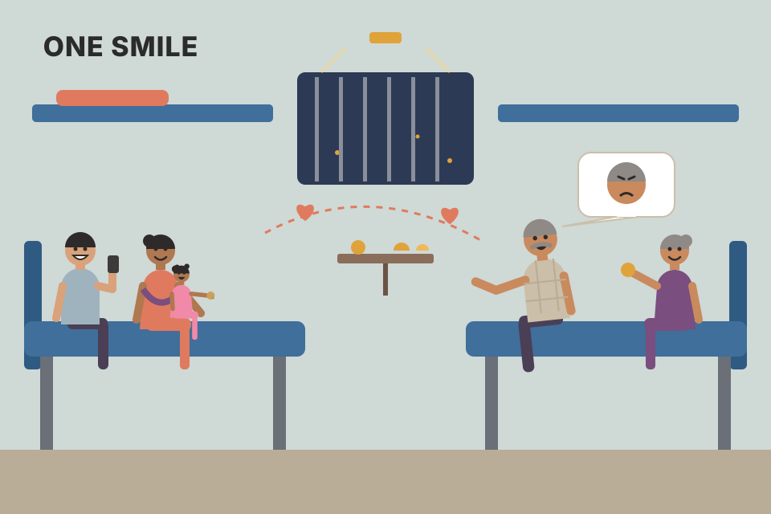
A packed second-class compartment on an overnight train out of Howrah. Everyone is tired, the train is late, people stare at their phones. A toddler on her mother's lap grins at the grumpy uncle on the opposite berth and offers him a soggy biscuit. He laughs, takes it, and asks where they are going. Within ten minutes the whole bay is sharing oranges and arguing about cricket.
Where it breaks: a toddler's smile carries zero risk of being misread; an adult's smile to a stranger sometimes does (as a sales pitch, or unwanted attention). Carnegie's adult examples later in the chapter add context: a greeting, a hello, a reason to be there.
What's happening behind it
The book's explanation: a smile invites a smile. The man smiled back without deciding to, and once he was smiling, talking came easily, and others followed. Nobody wants to be the first to break the silence in a tense room; a smile does it at no cost.
Beyond the book: psychologists call this emotional contagion (Elaine Hatfield and colleagues, 1990s): people tend to automatically mimic the expressions, voices and postures around them, and the mimicry nudges their own feelings in the same direction. Studies using facial-muscle sensors (Ulf Dimberg, 2000) found that people's smiling muscles twitch within a fraction of a second of seeing a smiling face, even when the picture is flashed too fast to notice consciously.
At work
The waiting room is every tense meeting: a stand-up after a bad release, the first call with an annoyed client, an incident bridge at 2 a.m. Everyone is waiting for someone else to set the tone. The lead who opens with a genuine "Morning, everyone. Rough night, thanks for being here" and an easy face gives the room permission to talk normally. The lead who opens with a silent glare at the dashboard gets seven people staring at their own screens.
A real smile, not a grin: why sincerity is the whole point
pdf p81
Not an insincere grin. Right after the baby story Carnegie heads off the obvious objection. He is not recommending a fake smile. A mechanical grin fools nobody: people can tell, and they resent it. He means a warm smile that comes from inside, the kind he says is worth real money in business. This caveat is easy to skip and it is the most important sentence in the chapter: the principle is "smile", but the smile has to be real.
Two witnesses for the real smile.
Professor James V. McConnell, a psychologist at the University of Michigan, said people who smile tend to be better at managing, teaching and selling, and tend to raise happier children. His reason: a smile carries far more information than a frown, which is also why encouragement teaches better than punishment.
A hiring manager at a large New York department store told Carnegie she would rather hire a sales clerk who had not even finished grade school, as long as that person had a pleasant smile, than a PhD with a gloomy face.
"There's far more information in a smile than a frown."Prof. James V. McConnell, quoted by Carnegie (pdf p81)
Why "more information"? McConnell does not unpack it, so here is one way to read it (ours): a frown tells you only "something is wrong", without saying what or how to fix it, so the person freezes or guesses. A smile tells you "this is right, keep going, I'm with you", which is specific, usable feedback. It is the same point Part One made about praise versus criticism (Skinner's finding that reward teaches better than punishment, in Ch.1).
The grin (what Carnegie rejects)
Switched on when you need something, off as soon as you turn away. Only the mouth moves. Arrives with a pitch attached. People feel handled, and resent it.
The real smile (what he means)
Comes from actually being glad to see this person. Reaches the eyes. Asks for nothing. People feel liked, and like you back.
Picture it
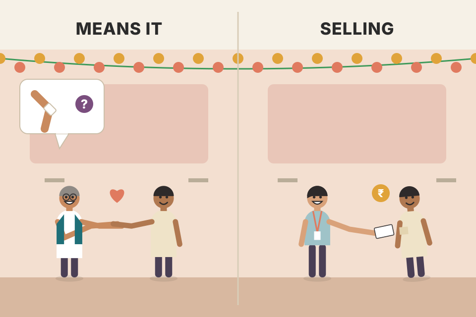
At a cousin's wedding, a distant uncle you have met twice greets you with a big, warm smile and a "Beta, how is the job, how is your mother's knee?" You can feel he means it. Ten minutes later, an insurance agent at the same wedding greets you with an equally wide smile and slides a business card into your hand. Same muscles, completely different message.
Where it breaks: at the wedding you know who is selling. In daily life the difference is subtler, and that is Carnegie's point: people sense it anyway, even when they could not explain how.
What's happening behind it
The book's explanation: people are good at detecting a mechanical smile, and they resent being manipulated more than they would resent no smile at all. So a fake smile is worse than a neutral face.
Beyond the book: in the 1860s the French neurologist Guillaume Duchenne noticed that a spontaneous smile uses not only the mouth muscles (zygomatic major) but also the muscle around the eyes (orbicularis oculi), which creates the "crow's feet" crinkle. Paul Ekman later named this the Duchenne smile. Research since has shown the line is not perfectly clean (some people can fake the eye crinkle, and a strong mouth smile can push the cheeks up on its own), but people do on average rate eye-involving smiles as more genuine and trust them more.
At work
The employment manager's rule shows up in engineering hiring too, in a modern form: for roles that face customers or many teams (solutions engineer, tech lead, developer advocate), interviewers weigh warmth and approachability heavily, sometimes over a stronger CV. For a purely heads-down role the trade-off is different, and it should be; the point is not that smiling beats skill but that a gloomy face is a real cost, not a neutral one.
And McConnell's "more information in a smile" is a code-review lesson. A review full of only problems (frowns) tells the author what to stop. A review that also says "this retry logic is exactly right" tells them what to repeat.
Connects to
Sincerity versus flattery, the same line drawn for praise: Part One, Ch.2 ("honest and sincere appreciation").
The smile you can hear: "phone power" and Robert Cryer's hard-to-fill job
pdf p81–82
A smile works even when nobody sees it. American telephone companies ran a training programme called "phone power" for staff who sold services or products by phone. One of its tips: smile while you talk. The listener cannot see your face, but the smile comes through in your voice.
The situation. Cryer badly needed to hire someone with a PhD in computer science, which was a hard role to fill. He found a young man about to graduate from Purdue University who had exactly the right background. Over several phone calls he learned the candidate had other offers, many from larger, better-known companies than his.
The result. To Cryer's delight, the young man accepted his offer. Once he had started, Cryer asked him why he had picked them over the others.
The reason. After a pause, the new hire said the managers at the other companies had sounded cold and businesslike on the phone, which made him feel like just another transaction. Cryer had sounded genuinely glad to hear from him, as if he really wanted him on the team. Cryer told the class he still answers his phone with a smile.
"Your voice sounded as if you were glad to hear from me."The new hire to Robert Cryer, quoted by Carnegie (pdf p82)
Why it matters: Cryer lost on company size and probably on name recognition. He won on the one thing every competitor could have done and didn't: making the candidate feel wanted as a person rather than processed as a vacancy.
Rewrite it: put the smile into words
Most of your "phone calls" today are Slack messages and emails, where there is no voice to carry a smile. Pick a cold message, think how you would warm it up, then reveal a Carnegie-style version and what changed.
Picture it
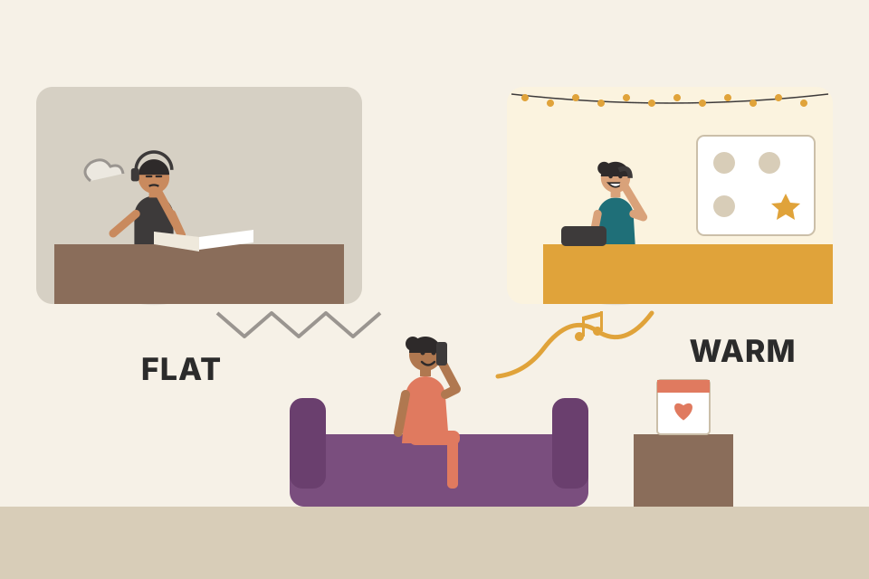
You call two Bengaluru restaurants to book a table for your parents' anniversary. The first answers "Haan, tell", sighs while checking, and says "Eight-thirty only, take it or leave it." The second answers "Good evening! Oh, an anniversary, how lovely, let me find you a nice corner table." You never saw either face. You know exactly which one was smiling, and which one you will recommend.
Where it breaks: a voice can sound warm for reasons other than a smile (training, a good mood, a nice accent), and a smiling person can still sound flat on a bad line. The smile is a reliable way to warm your voice, not the only way.
What's happening behind it
The book's explanation: the smile changes your voice, and the listener hears it. People choose the person who seems glad to deal with them over the bigger name that treats them as a transaction.
Beyond the book: this one has direct lab support. Smiling pulls the lips back and shortens the vocal tract, which raises the resonant frequencies of speech, and listeners can pick out smiled speech from neutral speech even over audio alone (Amy Drahota and colleagues, 2008, found listeners could even tell apart different kinds of smiles by voice). A later study (Pablo Arias and colleagues, 2018) digitally added a "smile" to recorded voices, and listeners' own smiling muscles responded to it, so the contagion from plate 2 works through sound too.
At work
Recruiting is Cryer's story exactly. If you are the engineer on a hiring loop or the lead closing a candidate, you compete with bigger companies on salary and brand and often lose. You can win on "they actually seemed to want me": a warm first call, remembering what the candidate said they cared about, a quick personal note after the onsite. Candidates talk about this constantly; "the other company felt like a conveyor belt" is a common reason for choosing a smaller offer.
On video calls, the camera is the phone: keep it on for first meetings, and look at the lens when you greet people. On voice-only calls (on-call bridges, client escalations), physically smiling when you say hello really does change how you sound.
Interview angle. Phone screens and recruiter calls are often voice-only. Answer with a smile on the first sentence ("Hi, thanks for calling, I've been looking forward to this"). It costs nothing and it is the first data point the recruiter writes down.
Connects to
Making the other person feel important, sincerely: Part Two, Ch.6 (Ch.9). Cryer's candidate felt wanted rather than processed.
Calling people by name, the next principle, works the same way: Ch.6 Remember names.
05 · THE FEELING UNDER THE SMILE
"Have a good time meeting people": the rubber-company chairman's warning
pdf p82
The claim. The chairman of the board of one of the biggest rubber companies in the United States told Carnegie that, from what he had seen, people rarely succeed at anything unless they enjoy doing it. He had little faith in the old saying that hard work alone is the key that opens every door.
The pattern he had watched. He had known people who succeeded because they had a tremendous time running their business. Later he saw the same people change: the fun turned into work, the business became dull, they lost all joy in it, and they failed.
Carnegie's lesson from it is the bridge to everything else in the chapter: you have to enjoy meeting people if you expect them to enjoy meeting you. A real smile is simply what that enjoyment looks like from the outside. You cannot fake the smile for long, so work on the enjoyment.
Picture it
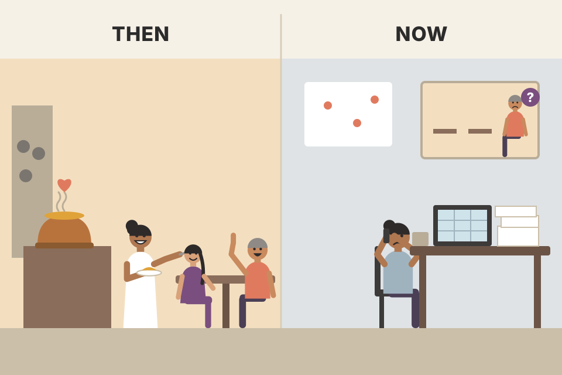
A young chef opens a small biryani place in Hyderabad because she loves cooking for people. She chats with every table, tweaks the recipe on regulars' advice, and the queue reaches the street. Five years and three branches later she spends all day on rosters and supplier invoices, snaps at staff, and never steps into the dining room. The regulars notice before the accounts do.
Where it breaks: growing a business really does add dull, necessary work, and a fading smile is often a symptom of exhaustion rather than its cause. The chairman's fix is to keep the part you enjoy, not to pretend the invoices away.
What's happening behind it
The book's explanation: enjoyment shows on your face and in your energy, people respond to it, and the response feeds your success; when the joy goes, people feel the difference and the success goes with it. So the smile is downstream of a real feeling, which is why the next plates are about creating the feeling.
Beyond the book: motivation research (Edward Deci and Richard Ryan's self-determination theory) separates intrinsic motivation (doing something because it is interesting or satisfying) from extrinsic motivation (doing it for pay or approval), and finds intrinsic motivation tends to sustain effort and creativity better over time. Burnout research (Christina Maslach) describes the "fun became work" slide as exhaustion plus cynicism, and treats it as a signal about workload and control, not a personal failing.
At work
Engineers often enjoy the code and dread the people part: the stand-up, the stakeholder sync, the new joiner's questions. That dread shows on your face in every meeting. Carnegie's advice is not to grit your teeth and grin; it is to find the part of meeting people you can genuinely enjoy (the teammate who asks good questions, the client whose problem is actually interesting) and lead with that.
For leads: watch for the chairman's pattern in your team. The engineer who used to joke in stand-ups and now answers in one word may be sliding from fun into dull work. That is worth a 1:1 before it is worth a performance conversation.
06 · THE EXPERIMENT
Bill Steinhardt's week of smiling: one grouch, one assignment, a changed life
pdf p82–83
The assignment. Carnegie gave thousands of business people the same homework: smile at someone every hour of the day for a week, then come back and tell the class what happened. He offers one report as typical of hundreds, not as a lucky exception.
William B. SteinhardtNew York stockbrokermarried 18+ yearsresults in 2 months
Before. In over eighteen years of marriage, Steinhardt wrote, he had rarely smiled at his wife or said more than a couple of dozen words to her between getting up and leaving for work. He called himself one of the worst grouches on Broadway.
The start. Because he would have to give a talk about it in class, he decided to try it for a week. The next morning, combing his hair, he looked at his gloomy face in the mirror and told himself that today the scowl was going, and that he would start smiling right now. At breakfast he said "Good morning" to his wife with a smile.
At home. Carnegie had warned him she might be surprised; she was stunned, completely bewildered. He told her to expect it every day from now on, and he kept it up. In the two months since, he said, there had been more happiness in their home than in the whole year before.
On the way to work. He began greeting the lift operator in his building and the doorman with a smile and a "good morning", smiled at the cashier in the subway booth when getting change, and smiled on the floor of the Stock Exchange at people who had never seen him smile. Soon, he found, everybody was smiling back.
In business. He started handling people who came to him with complaints cheerfully, smiling as he listened, and found disputes were settled much more easily. Smiles, he said, were bringing him money, a lot of it, every day.
The office mate's confession. He shared an office with another broker. When Steinhardt told one of that broker's clerks, a likeable young man, about his new approach, the clerk admitted he had thought Steinhardt a terrible grouch when he first moved in, and had only recently changed his mind. Steinhardt was really human, the clerk said, when he smiled.
The rest of the change. Steinhardt had not stopped at smiling. He had also cut criticism out of his life, gave appreciation and praise instead of condemnation, stopped talking about what he wanted, and tried to see the other person's point of view. Together, he said, these had transformed his life: he was happier, richer, and richer in friendships, which he now thought were the only things that matter much.
"He said I was really human when I smiled."Steinhardt, reporting the clerk's words (pdf p83)
Step through the story
Dated setting. The scene is a 1930s–50s household: a husband who leaves for "business" and a wife at the breakfast table, a lift operator and a doorman, a cashier in a subway booth. A modern version is anyone who has gone quiet and grumpy at home over years: a partner who is on their phone through breakfast, a grown child who never says good morning to their parents, a flatmate who grunts. The experiment works the same way.
Picture it
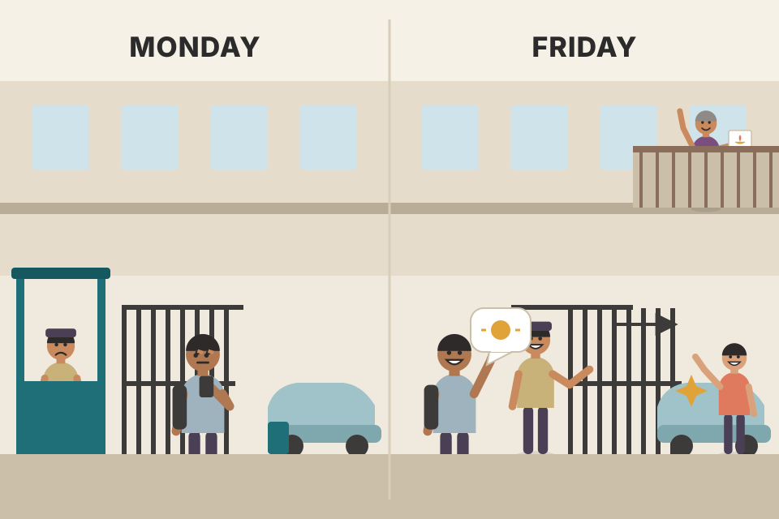
An engineer in a Pune housing society has, for years, walked past the security guard, the car-wash boy and the lift without a word, eyes on his phone. One Monday he decides to try Carnegie's homework: a smile and a "Good morning, bhaiya" to everyone he passes. By Friday the guard opens the gate before he reaches it, the car-wash boy saves him the first slot, and his neighbour, who had always found him rude, invites him to the Diwali committee.
Where it breaks: Steinhardt's changes stuck because he also dropped criticism and started seeing other people's views. A week of smiling on top of old habits would have been a nice week, not a changed life. The smile opened the door; the other changes kept it open.
What's happening behind it
The book's explanation: a smile invites a smile, and people treat you the way your face tells them you see them. The scowling broker was seen as a grouch and treated like one; the smiling broker was seen as human. Carnegie also lets Steinhardt's last paragraph make a quiet point: the smile was one of five changes, and four of them came from Part One (no criticism, praise, thinking of what the other person wants, their point of view).
Beyond the book: notice the design of the homework. Carnegie did not ask people to believe in smiling; he asked them to do it on a schedule (every hour) for a fixed time (a week) and report back to a group. That is close to what behaviour-change research now recommends: a small, specific action with a cue, a short trial, and public accountability. Also notice the evidence is self-reported by enthusiastic students in a class that sold the method; it is a strong illustration, not a controlled test.
At work
Every team has a Steinhardt: brilliant, reliable and known as "a bit scary", because their resting face in stand-up and code review reads as disapproval. People route around them, so they learn about problems late. If that might be you, Carnegie's experiment is cheap: for one week, greet each person you work with by name with a real smile, and smile while listening to whoever brings you a bug report or a complaint. Notice whether people start bringing problems earlier.
Interview angle. "Tell me about a time you received feedback that surprised you." A story like the clerk's ("a new teammate told me I came across as unapproachable, here is what I changed and what happened") shows self-awareness and a concrete change, which is what the question is really testing.
Don't feel like smiling? Act as if: William James's back door to a feeling
pdf p83–84
The objection. All very well, but what if you don't feel like smiling? Carnegie gives two answers.
Force yourself to smile. If you are alone, make yourself whistle, hum a tune or sing.
Act as if you were already happy, and that will tend to make you happy.
William James's version. Carnegie backs this with the American psychologist and philosopher William James (1842–1910). James's one idea, in our words: we can't switch a feeling on by willpower, but we can choose what we do, and feelings follow what we do more than we expect. So when the good mood has gone, the way back is to behave as a cheerful person would and let the feeling catch up.
"Action and feeling go together."William James, quoted by Carnegie (pdf p83)
Reflect, then reveal
Think of one thing coming up that you are not in the mood for: a stand-up after a bad night, a call with a difficult client, a family lunch. Write how you expect to walk in (face, posture, first words). Nobody sees this; it is not saved.
Picture it
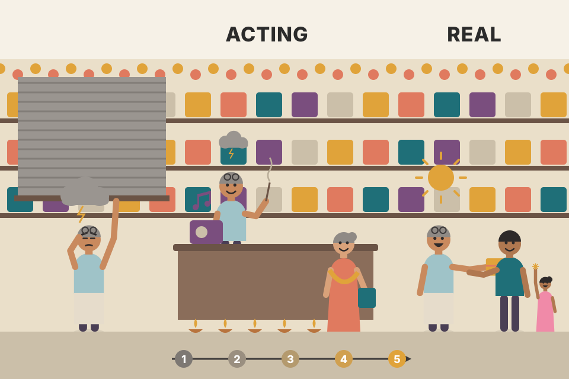
A kirana shop owner wakes up on a festival morning with a headache and a fight with his son still in his head. He doesn't feel festive at all. He still pulls up the shutter, lights the agarbatti, puts on the bhajan, and greets the first customer with "Happy Diwali, aunty!" By the fifth customer, the greeting isn't an act any more.
Where it breaks: for an ordinary bad mood this works well. For grief, depression or real exhaustion, "act cheerful" can turn into hiding pain, and that needs rest, people or professional help, not a smile. James and Carnegie are talking about the first case.
What's happening behind it
The book's explanation (via James): we cannot order ourselves to feel cheerful, but we can order ourselves to act cheerful, and feeling follows action more than we assume. So the smile is not only a signal to others; it is a lever on your own mood.
Beyond the book, honestly weighed: this is now called the facial feedback hypothesis. A famous 1988 study by Fritz Strack and colleagues had people hold a pen in their teeth (forcing a smile) or lips (blocking one) and found the "smilers" rated cartoons funnier. In 2016 a 17-lab replication found no effect, which made the idea look shaky. Later work, including a large meta-analysis (Nicholas Coles and colleagues, 2019) and a multi-country study (2022), found a real but small effect: posing a smile does nudge mood up a little. So James is partly right: the action helps, modestly. The bigger gains in this chapter come from the social loop (others smile back and treat you better), which then gives you real reasons to feel good.
At work
You are on call, it is your third page of the night, and the stand-up is at 9:30. You will not feel cheerful, and nobody expects you to. James's advice is small: sit up, turn the camera on, start with "Morning, all" with a real smile, then give your update. It is not about pretending the night was fine (say it was rough); it is about not letting the mood set the tone for six other people.
Before a high-stakes conversation (a performance review you are giving, a final-round interview), a minute of "acting as if" helps: posture up, a smile in the lift, saying your opening line out loud once. The research effect is small, but you only need a small nudge to get through the first minute, and after that the conversation carries you.
Connects to
Carnegie's companion book How to Stop Worrying and Start Living builds a whole method on "act as if" and on controlling your thoughts (Beyond this book).
Acting enthusiastic as a way to become enthusiastic also underlies dramatizing your ideas: Part Three, Ch.11.
08 · WHERE HAPPINESS COMES FROM
Happiness is an inside job: two people in the same place, and the boys on the station stairs
pdf p84
The claim. Everyone in the world is looking for happiness, Carnegie says, and there is one sure way to find it: by controlling your thoughts. Happiness does not depend on outward conditions; it depends on inner ones.
Not what, who or where. It is not what you own, who you are, where you are or what you are doing that makes you happy or unhappy. It is what you think about it.
Two people, same everything. Two people can be in the same place doing the same work, with about the same money and status, and one is miserable while the other is happy. The only difference is attitude.
Peasants and offices. Carnegie says he saw as many happy faces among poor farm workers labouring with primitive tools in the crushing heat of the tropics as in air-conditioned offices in New York, Chicago or Los Angeles.
Shakespeare, through Hamlet, said that nothing is good or bad in itself; thinking is what makes it one or the other.
Lincoln is quoted as saying that most people are about as happy as they decide to be. Carnegie says he was right.
"Most folks are about as happy as they make up their minds to be."Attributed to Abraham Lincoln, quoted by Carnegie (pdf p84)
Long Island Railroad station, New York30–40 boyscanes and crutches
The scene. Carnegie was climbing the stairs at a Long Island Railroad station when, right in front of him, a group of thirty or forty boys with physical disabilities were making their way up on canes and crutches. One had to be carried. What astonished him was how much they were laughing and joking.
The explanation he was given. He asked one of the men in charge of the boys about it. The man said that when a boy realizes he will be disabled for life, he is shocked at first; once he gets over the shock, he usually accepts it and becomes as happy as any other boy.
Carnegie's reaction. He says he wanted to take his hat off to them, and that they taught him a lesson he hoped never to forget.
Dated wording. The book calls the boys "crippled" and says a boy "resigns himself to his fate"; today we would say "boys with physical disabilities", and we would be wary of framing disability as a fate to be resigned to. The core observation survives the update: people adapt to hard circumstances far better than outsiders expect, and their mood often surprises those watching.
Same day, two minds
One situation, two ways of thinking about it. Pick a situation, then flip between the thoughts. Nothing about the facts changes.
Picture it
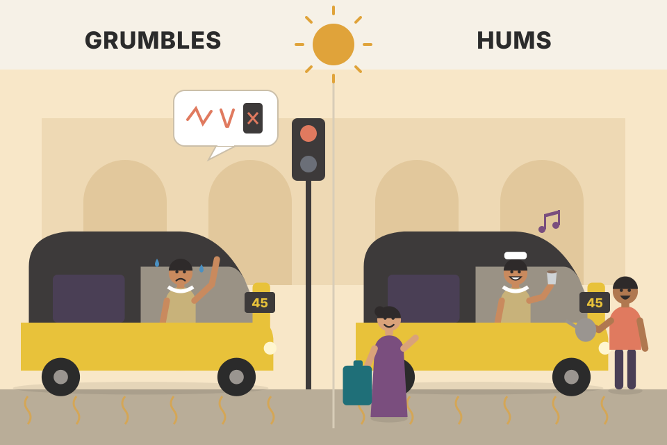
Two auto-rickshaw drivers wait in the same queue outside Mumbai Central in the same June heat, for the same fares. One spends the wait cursing the traffic police, the heat and the app companies. The other chats with the chaiwala, hums along to the radio, and jokes with each passenger. Same road, same money, very different day.
Where it breaks: attitude cannot pay a loan or cool the heat, and telling someone in real hardship to "just think positive" is unkind. Carnegie's point is narrower: between people in the same circumstances, a lot of the difference in happiness is in their thinking.
What's happening behind it
The book's explanation: events do not arrive with a fixed emotional label; your thinking adds the label. Since you can influence your thoughts (and, via James, your actions), you have more say over your mood than you assume, and the smile is both the result and a cause of that mood.
Beyond the book: this is the core idea of modern cognitive behavioural therapy (Aaron Beck, Albert Ellis), which traces back to the Stoic Epictetus: people are troubled less by events than by their judgments about them. The boys on the stairs match research on hedonic adaptation: a well-known 1978 study by Philip Brickman and colleagues found people who had become paralysed in accidents rated their everyday happiness lower than others but much higher than outsiders predicted. Two cautions: genes and circumstances also matter (poverty, illness and loneliness have real, lasting effects on wellbeing), and the Lincoln line is widely repeated but historians have not found a reliable source showing he said it.
At work
Two engineers are moved onto the same legacy codebase in the same reorg. One tells everyone it is a punishment and a career dead end; the other decides it is the best place in the company to learn how real systems fail, and starts writing the runbooks nobody had. Six months later they have the same code and very different reputations. You often cannot choose the project; you can choose the story you tell yourself about it, and that story shows on your face in every meeting.
As a lead, notice when a team's mood is "outward conditions" (the deadline, the reorg) that you can change, and when it is a shared story you can help reframe. Fix the first; don't try to smile it away.
09 · GO FIRST
Maria Gonzalez stops looking away: the smile at the water cooler
pdf p84–85
The problem. Working alone in a closed-off room is lonely, Carnegie notes, and it also takes away the chance to make friends with colleagues.
Guadalajara, MexicoSeñora Maria Gonzaleza job in a closed-off officethe first few weeks
The situation. Maria Gonzalez had exactly that kind of job. She could hear the other people in the company chatting and laughing together, and she envied their friendship. But when she passed them in the corridor during her first weeks, she was shy and looked the other way.
The turn. After a few weeks she told herself, in effect: those women are not going to come to you; you have to go out and meet them.
The move. The next time she walked to the water cooler, she put on her brightest smile and said "Hi, how are you today?" to each person she met.
The result. It worked straight away. People returned the smiles and hellos, the corridor felt brighter and the job friendlier. Acquaintances followed, and some grew into friendships. Her job, and her life, became more pleasant and interesting.
"You have to go out and meet them."Maria Gonzalez to herself, quoted by Carnegie (pdf p85)
What this story adds. The earlier stories show smiles being returned. This one shows the step before: someone has to smile first. Maria's colleagues were not cold; her looking away told them she wanted to be left alone, so they did. Her shyness looked, from the outside, like the sour face of the heiress in plate 1.
Which move? (Maria's test)
Pick a response to see how Carnegie would judge it.
Picture it
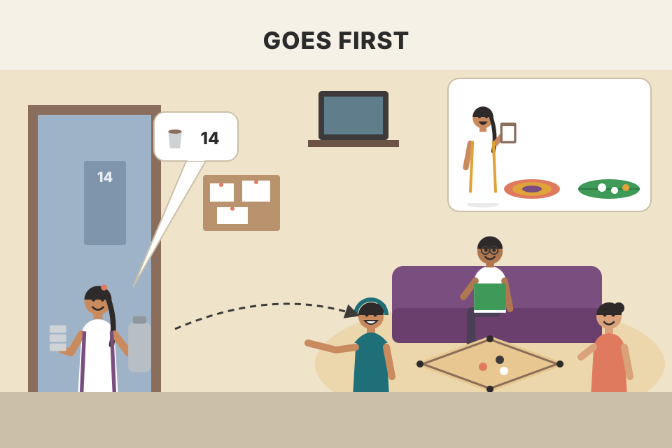
A new student joins a hostel in Delhi from a small town in Kerala. For two weeks she eats quickly in the mess and goes back to her room, hearing the laughter from the common room. One evening she makes a big flask of filter coffee, walks into the common room, smiles and says "Anyone want coffee? I'm Anju, room 14." By the end of term she is the one organising the Onam night.
Where it breaks: the coffee was a gift, which makes going first easier; a smile alone works, but it may take a few days of hellos rather than one evening. And some groups really are closed. Maria's colleagues were open and waiting; you cannot always tell which kind you face until you try.
What's happening behind it
The book's explanation: other people are not going to come to you, especially if your face says "leave me alone". A smile and a greeting are the lowest-cost way to say the opposite, and people usually answer in kind.
Beyond the book: two findings fit Maria's story. The liking gap (Erica Boothby and colleagues, 2018): after a conversation with a stranger, people consistently underestimate how much the other person liked them, so we hold back from making the first move more than we should. And studies by Nicholas Epley and Juliana Schroeder (2014) found commuters who were asked to talk to a stranger expected it to be unpleasant, yet reported a better journey than those told to keep to themselves. Shyness is often a forecasting error.
At work
Remote and hybrid teams have made everyone a little like Maria: alone in a room, hearing (or seeing in Slack) other people's banter. The fix is the same and now has to be deliberate: say a real "morning" in the team channel, turn your camera on for the first minute of calls, show up early to a meeting and ask someone how their weekend was, walk over to the new joiner's desk on day one. If you are new, you go first; if you lead the team, you go first for the new person.
Interview angle. "How did you build relationships when you joined a new team?" A specific Maria-style answer beats a general one: "In my first week I set up 15-minute intros with each engineer and asked what they wished the last new person had known. Two of those turned into the people I pair with most."
Learning and using people's names, the very next step after the hello: Ch.6 Remember names.
10 · ATTITUDE, AND A PROVERB
Elbert Hubbard's morning advice, and "no smiling face, no shop"
pdf p85–86
Hubbard's advice. Carnegie reprints a passage from Elbert Hubbard (1856–1915), an American essayist and publisher, with a warning: reading it will do you no good unless you apply it. Summed up in our words, Hubbard's advice has two halves.
The body
Walk out each day standing tall and breathing deeply, and meet friends with a warm smile and a handshake that means something.
The mind
Stop worrying about being misunderstood or about people who dislike you. Decide clearly what you want and keep heading for it. Hold a steady picture of the capable, useful person you want to become, and keep a brave, open, cheerful attitude; over time, he says, that picture shapes you.
His closing image is that people are still unfinished, like an insect in its cocoon, still becoming what they will be.
The Chinese proverb. Carnegie then says the ancient Chinese were wise in the ways of the world, and gives a proverb he thinks we should cut out and paste inside our hats:
"A man without a smiling face must not open a shop."Chinese proverb, quoted by Carnegie (pdf p86)
Dated wording. "A man" means anyone; a modern version is "If you can't smile, don't open a shop." The "paste it inside your hat" tip is from an era when men wore hats daily; today it would be your phone's lock screen or a sticky note on your monitor.
Picture it
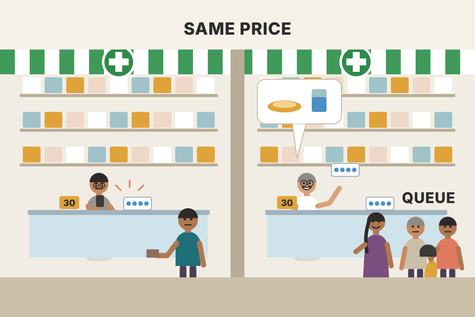
Every Indian neighbourhood has the proof of the proverb: two medical shops side by side. One chemist barely looks up, slaps the strip on the counter, and points at the price. The other says "Fever? Take this after food, and drink plenty of water. Hope she feels better." Both sell the same paracetamol at the same price. One has a queue.
Where it breaks: some shops win on price or location whatever the shopkeeper's face, and online shopping has no face at all. The proverb is about any job where people deal with you directly, which today includes most jobs, not literally about shops.
What's happening behind it
The book's explanation: Hubbard links posture, breathing and a smile to a mental attitude of courage and cheer, the same "act as if" loop James described: carry yourself well, and your mind follows. The proverb puts it bluntly in business terms: if your work involves people, an unsmiling face is a professional defect.
Beyond the book: Hubbard's "the thought you hold is transforming you" is an early version of later self-help ideas (Norman Vincent Peale's The Power of Positive Thinking, 1952, and more recently "manifesting"). The posture claims had a modern revival as "power posing" (Amy Cuddy and colleagues, 2010); large replications found that posture does not reliably change hormones, and has at most a small effect on how confident people feel. The defensible core is modest: good posture and a smile make you look more confident and approachable to others, and may lift your own mood a little. "Hold the picture and it will come true" is not supported; clear goals plus action are.
At work
In engineering, "the shop" is every interface you have with other people: the help channel your team runs, the on-call handoff, the API your team owns. An expert who answers questions with a sigh and "read the docs" is opening a shop with no smile; people will route around them, build their own workaround, or escalate to their manager instead. The same answer with "Good question, it's not obvious. Here's the doc section, ping me if step 3 is unclear" keeps the shop busy.
11 · THE GIFT · PRINCIPLE 2
Your smile is a messenger of goodwill: the department store's Christmas ad, and Principle 2
pdf p86–87
The messenger. Carnegie's closing argument: your smile carries your goodwill to others and brightens the lives of everyone who sees it. To someone who has just seen a dozen people frown, scowl or turn away, your smile is like sun breaking through clouds. That matters most when the person is under pressure, from bosses, customers, teachers, parents or children. A smile can help them see that things are not hopeless and that there is still some joy in the world.
The Christmas ad. Years earlier, a New York department store, aware of how much strain its sales staff were under during the Christmas rush, printed a short piece in its advertisements called "The Value of a Smile at Christmas". The gist, in our words:
A smile costs the person who gives it nothing and can mean a great deal to the person who gets it. It lasts a moment but may be remembered for years, it helps at home, at work and between friends, and nobody can buy or force one; it is only worth anything when it is given freely. Then the ad turns the request around: if one of the store's worn-out clerks is too tired to smile at you in the last-minute rush, please give them one of yours, because the people who most need a smile are the ones with none left.
Why the twist matters. Every earlier story in the chapter treats your smile as a tool for being liked. The ad turns it around: the people who most need a smile are the tired ones who cannot give one back, and smiling at them gets you nothing except their relief. That is the cleanest test of Carnegie's "real smile, not a grin": would you give it to someone who has nothing to offer you?
Principle 2 of Part Two (pdf p87)
Smile.
Self-audit: this week, did I…
Picture it
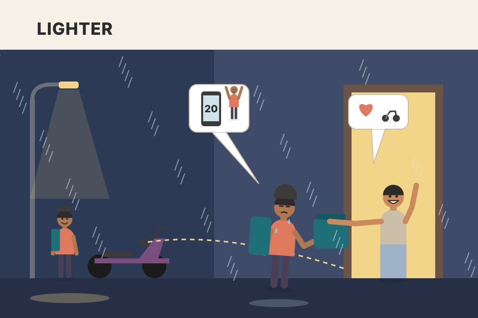
It is 11 p.m. at a Swiggy delivery handover. The rider is soaked from the Bengaluru rain, on his twentieth order of the day, and too tired to smile. You could take the bag and shut the door. Or you could smile, say "Thank you, bhaiya, careful on the roads," and mean it. He walks back to his bike a little lighter. That is the department store's last line in a modern city.
Where it breaks: a smile is not a substitute for a fair tip or fair pay, and the ad itself was written by a store hoping customers would go easier on overworked staff. Leave the smile and the tip.
What's happening behind it
The book's explanation: a smile is pure goodwill made visible, so it lifts people most when they are short of it. It costs the giver nothing and is worth a lot to the receiver, which is why the whole chapter can be compressed into one word.
Beyond the book: research on brief, warm contact with strangers backs the ad's claim that small moments count. Gillian Sandstrom and Elizabeth Dunn (2014) found that people who had a short friendly exchange with a barista (a smile, a few words) left feeling happier and more connected than those who kept it purely transactional. The ad's request for customers to smile at tired clerks also points at emotional labour, which the next section's "Where it can go wrong" takes up.
At work
The "too tired to smile" clerk is the teammate at the end of a brutal on-call week, the support engineer who has been yelled at by three customers today, the QA engineer everyone pings when a release is late. They are the people least likely to smile at you and most in need of one. A real "thanks for holding the pager this week, that was a lot" costs you ten seconds.
Interview angle. "How do you keep team morale up under pressure?" A good answer is concrete and small, Carnegie-style: noticing and thanking people who carried the load, greeting people warmly even on bad days, setting the tone in the first minute of the stand-up, and also fixing the cause of the pressure (scope, staffing), because a smile alone does not.
Your face matters more than your clothes. The heiress spent a fortune on furs and jewels and wore a sour face; Charles Schwab said his smile was worth a million dollars. A smile says "I like you, you make me happy, I'm glad to see you", which is why dogs and babies win us over.
A smile spreads. One baby's smile in Dr. Sproul's waiting room turned a tense, silent room into a friendly conversation.
It must be real. A mechanical grin fools nobody and is resented. McConnell: people who smile manage, teach and sell better and raise happier children; a smile carries more information than a frown, as encouragement teaches better than punishment. A store's hiring manager preferred a smiling clerk without schooling to a sombre PhD.
It works unseen. Phone companies' "phone power" taught staff to smile on calls. Robert Cryer won a Purdue PhD against bigger firms because he sounded glad to hear from him.
Enjoy people. A rubber-company chairman saw people succeed while business was fun and fail once it became dull work. You must enjoy meeting people for them to enjoy meeting you.
Try it for a week. Steinhardt's assignment changed his marriage, his commute, his complaint handling and his income, though he also dropped criticism and began seeing others' views.
If you don't feel it, act as if. Force a smile; hum or sing when alone. William James: we control action directly and feeling only through action. Happiness depends on inner conditions (Shakespeare, Lincoln, the boys on the station stairs).
Go first. Maria Gonzalez stopped looking away and greeted everyone at the water cooler; friendships followed. Hubbard: posture, breath, a smile, a goal and a cheerful attitude. "No smiling face, no shop."
A smile is goodwill made visible, most valuable to those who have none left to give (the Christmas ad). Principle 2: Smile.
Term or phrase
Meaning on this page
Where
Principle 2
Smile.
pdf p87
Face over clothes
The expression you wear matters more than what you wear (the heiress).
pdf p80
What a smile says
"I like you. You make me happy. I am glad to see you."
pdf p80
Insincere grin
A mechanical smile; it fools nobody and breeds resentment.
pdf p81
More information than a frown
McConnell's reason a smile teaches and leads better.
pdf p81
Phone power
Telephone-company training: smile on the phone; it shows in your voice.
pdf p81
Have a good time meeting people
Enjoy people if you want them to enjoy you; fun drives success.
pdf p82
Smile-every-hour homework
Carnegie's week-long class assignment (Steinhardt's report).
pdf p82–83
Act as if
Behave cheerfully to become cheerful; action steers feeling (William James).
pdf p83–84
Inner conditions
Happiness depends on what you think about your situation, not the situation.
pdf p84
"No smiling face, no shop"
Chinese proverb: if you deal with people, smile.
pdf p85–86
Messenger of goodwill
A smile carries your goodwill; most needed by those with none left to give.
pdf p86
13 · USE IT
Practice this week
beyond the book
Small exercises, each with a way to tell whether it worked. The first one is Carnegie's own class homework; the rest are ours, built on the chapter's ideas.
Carnegie's homework. For one working week, smile at someone (really) at least once an hour: a colleague, the security guard, the person at the canteen counter. Keep a one-line note each evening of anything that went differently. Worked if: by Friday you can name at least one person who now greets you first.
The first ten seconds. In every call or meeting this week, make your first words a warm greeting with a smile, before any business ("Morning, Priya, good to see you"). Worked if: meetings start with small talk more often, and people talk sooner.
Phone power. Before answering your next three calls (recruiter, client, family), smile before you say hello. Worked if: the other person sounds warmer back, or the call goes faster to the point.
Smile in text. Rewrite your next five Slack replies so the first line sounds glad to hear from the person ("Thanks for flagging this!") before the answer. Worked if: fewer replies come back defensive or terse.
Maria's move. Pick one person on another team you nod past every day. Stop, smile, and ask how they are. Repeat three times this week. Worked if: you learn one real thing about them (their project, their weekend), and they start the next conversation.
The tired-clerk smile. Once a day, smile at and thank someone who is clearly worn out and has nothing to offer you (delivery rider, support engineer, the on-call person). Worked if: you notice how it changes your own mood, which is James's half of the chapter.
14 · LIMITS
Where it can go wrong
pdf p80–87 · plus beyond the book
The book's own caveats first.
A fake smile backfires. Carnegie says plainly that an insincere, mechanical grin fools nobody and is resented. The principle "Smile" only works with a real smile.
Reading is not doing. He warns that Hubbard's advice is useless unless applied, and builds the chapter around a homework assignment, not an opinion.
The smile is not the whole change. Steinhardt's transformation also came from dropping criticism, giving praise, thinking about what others want and seeing their viewpoint. A smile on top of old habits will not do what his did.
Enjoyment comes first. The chairman's warning cuts both ways: if the fun has gone out of your work, forcing smiles will not bring it back for long; you need to find what you enjoy about people again.
Beyond the book: our critique
Emotional labour. Sociologist Arlie Hochschild (The Managed Heart, 1983) studied flight attendants and found that being required to smile and feel cheerful as part of the job, whatever you actually feel, can be exhausting and lead to burnout. "Act as if" chosen by you for a hard morning is different from "smile or else" imposed by an employer. Don't turn Principle 2 into a rule for your team.
Who is asked to smile. Women in particular are often told to "smile more" by strangers and bosses, which feels controlling, not friendly. The principle is advice to yourself, never something to demand from others.
Masking real problems. Smiling through a bad situation (burnout, a toxic manager, a failing project) can hide what needs fixing. In an incident or a hard 1:1, a warm face should come with honest words, not replace them. And for depression or grief, "just smile" is not help.
Wrong moment. A broad smile while delivering bad news (a layoff, a rejected promotion, a production outage that hurt customers) reads as callous. Match your face to the moment: warmth, not cheerfulness.
Culture changes the meaning. Smiling norms differ widely. Kuba Krys and colleagues (2016) found that in some countries smiling individuals were rated as less intelligent or less honest than non-smiling ones; in others, the reverse. In India, a smile at a colleague is usually welcome, while a constant smile at a stranger can be misread. In some East Asian settings a smile can signal embarrassment rather than pleasure. Read the room.
Evidence is mixed in strength. The social effects (people smile back, warm voices win trust) are well supported. The "smile to feel happy" effect is real but small and contested, and the posture and "hold the picture" claims in Hubbard's passage are weak. The chapter's stories are testimonials from Carnegie's own students, not controlled tests.
Some smiles are unwelcome. A smile and a personal comment can feel like unwanted attention, especially across power or gender lines. A smile plus a normal greeting is safe; a smile plus a remark about someone's appearance is not.
15 · TEST YOURSELF
Check yourself
pdf p80–87
Try to answer before opening each one. The first half is story recall; the second half is using the principle.
1. What mistake did the heiress at the New York dinner party make?
She spent a fortune on furs, diamonds and pearls to impress people but did nothing about her face, which looked sour and selfish. Carnegie's point: the expression on your face matters far more than the clothes on your back.
2. What three things does a smile say, and why do dogs and babies show it?
"I like you. You make me happy. I am glad to see you." Dogs are so obviously glad to see us that we are glad to see them; a baby's smile works the same way. Neither is trying to impress; their pleasure in seeing you is plain.
3. What happened in Dr. Sproul's waiting room?
Six or seven clients sat waiting in silence to have their pets vaccinated. A young woman with a nine-month-old baby and a kitten sat next to an impatient man; the baby smiled at him, he smiled back, started talking with her about the baby and his grandchildren, and soon the whole room was chatting.
4. Why does Carnegie stress "not an insincere grin"? What did McConnell and the store's hiring manager say?
A mechanical grin fools no one and people resent it; only a real, warm smile works. McConnell: smiling people manage, teach and sell better and raise happier children; a smile carries more information than a frown, as encouragement teaches better than punishment. The hiring manager would hire a clerk who had not finished grade school but had a pleasant smile over a PhD with a sombre face.
5. How did Robert Cryer win the Purdue graduate against bigger companies?
On the phone. The other companies' managers sounded cold and businesslike, making the candidate feel like a transaction; Cryer sounded glad to hear from him and as if he really wanted him. The telephone companies' "phone power" programme taught the same thing: smile on the phone, it shows in your voice.
6. What did the rubber-company chairman observe, and what lesson does Carnegie draw?
People rarely succeed unless they enjoy what they do; he had seen people succeed while business was fun, then fail once it became dull work and they lost their joy. Lesson: you must enjoy meeting people if you expect them to enjoy meeting you.
7. Describe Steinhardt's experiment and its results.
Given Carnegie's homework (smile at someone every hour for a week), the grumpy stockbroker smiled at his wife at breakfast (she was bewildered), then at the lift operator, doorman, subway cashier and people on the Exchange floor. Home became happier in two months than the year before, people smiled back, complaints were settled more easily, he made more money, and an office mate's clerk admitted he had thought him a grouch. He also dropped criticism, gave praise, stopped talking about what he wanted and tried to see others' viewpoints.
8. What two things does Carnegie advise when you don't feel like smiling, and how does William James justify them?
Force yourself to smile (whistle, hum or sing if alone), and act as if you were already happy. James: we control what we do directly but our feelings only indirectly, through what we do. Behave cheerfully and the feeling tends to follow.
9. What does the Long Island Railroad station story illustrate?
That happiness depends on inner conditions. Carnegie saw thirty or forty boys with physical disabilities climbing the stairs on canes and crutches, one carried, laughing and joking. Their supervisor said that after the first shock, boys usually accepted their condition and became as happy as other boys.
10. What did Maria Gonzalez change, and what happened?
Working alone in a closed-off room, she had been shyly looking away from colleagues in the hall. She decided she had to go to them, and at the water cooler gave each person her brightest smile and a "Hi, how are you today?" Smiles and hellos came back immediately, the job felt friendlier, and some acquaintances became friendships.
11. What is the twist at the end of the department store's Christmas ad?
After saying a smile costs the giver nothing, means a lot to the receiver and cannot be bought or forced, it asks customers to leave a smile for any sales clerk too tired to give one, because nobody needs a smile more than those who have none left to give.
12. Application: you join a new remote team and feel like an outsider in Slack. What does this chapter suggest?
Maria's move: go first. Greet the channel warmly each morning, turn your camera on for the first minute of calls, and set up short intros where you ask people about their work. Don't wait for them to come to you; your silence reads as "leave me alone".
13. Application: you have to tell a teammate their project is being cancelled. Should you smile?
Not a cheerful smile; it would read as callous. Bring warmth instead: a kind face, honest words, and attention to how they feel. The chapter's principle is about real goodwill, and real goodwill here looks like care, not cheer. (This limit is ours; the book does not discuss bad news.)
14. Interview: "Tell me about a time you won someone over who had a better option." How can Cryer's story shape your answer?
Show that you made the person feel wanted as an individual, not processed: warmth on first contact, remembering what mattered to them, following up personally. Then give the outcome (they chose you) and what they said about why. Avoid a story that is only about your offer being better on paper.
15. Does "Smile" mean a team lead should ask the team to be more cheerful?
No. Carnegie addresses the principle to the reader, about their own face, and rejects fake smiles. Demanding cheerfulness from others is emotional labour imposed from above (Beyond the book: Hochschild). A lead applies it by setting the tone themselves and fixing the causes of low morale.
16 · SOURCES
References
pdf p80–87
Book pages and other sources used on this page
Dale Carnegie, How to Win Friends and Influence People, revised edition (1981; Simon & Schuster 2009 printing), Part Two, Chapter 2, "A Simple Way to Make a Good First Impression", pdf p80–87. Stories by page: the heiress, Schwab, dogs and babies p80; Dr. Sproul's waiting room p80–81; insincere grin, McConnell, the store's hiring manager, "phone power" p81; Robert Cryer p81–82; the rubber-company chairman p82; Steinhardt p82–83; William James p83–84; inner conditions, Shakespeare, Lincoln, Long Island Railroad station p84; Maria Gonzalez p84–85; Elbert Hubbard p85; Chinese proverb p85–86; messenger of goodwill and "The Value of a Smile at Christmas" p86; Principle 2 p87.
Quoted passages inside the chapter (William James, Elbert Hubbard, the Christmas ad, Steinhardt's letter) are summarized here in our own words, not reproduced.
Beyond the book (named where used): J. Willis and A. Todorov, "First impressions" (2006); E. Hatfield, J. Cacioppo, R. Rapson, Emotional Contagion (1994); U. Dimberg, M. Thunberg, K. Elmehed, unconscious facial reactions (2000); G.-B. Duchenne (1862) and P. Ekman on the Duchenne smile; A. Drahota, A. Costall, V. Reddy, "The vocal communication of different kinds of smile" (2008); P. Arias, P. Belin, J.-J. Aucouturier, auditory smiles and facial mimicry (2018); E. Deci and R. Ryan, self-determination theory; C. Maslach on burnout; F. Strack, L. Martin, S. Stepper (1988), E.-J. Wagenmakers et al. registered replication (2016), N. Coles, J. Larsen, H. Lench meta-analysis (2019) and the Many Smiles Collaboration (2022) on facial feedback; A. Beck and A. Ellis on cognitive therapy; P. Brickman, D. Coates, R. Janoff-Bulman, "Lottery winners and accident victims" (1978); E. Boothby et al., "The liking gap" (2018); N. Epley and J. Schroeder, "Mistakenly seeking solitude" (2014); A. Cuddy et al. on power posing (2010) and later replications; G. Sandstrom and E. Dunn, "Is efficiency overrated?" (2014); A. Hochschild, The Managed Heart (1983); K. Krys et al., "Be careful where you smile" (2016).
Historical notes (Beyond the book): Charles M. Schwab of U.S. Steel and Bethlehem Steel; the unverified attribution of the "as happy as they make up their minds to be" line to Lincoln; Shakespeare, Hamlet, Act 2, Scene 2.